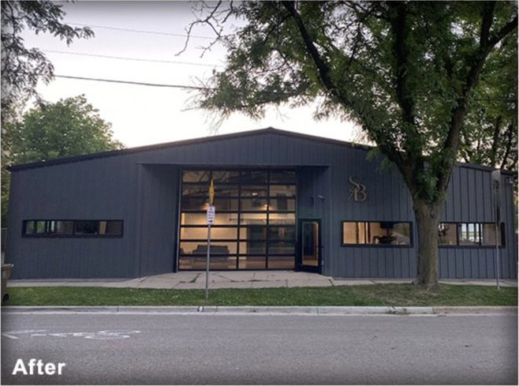
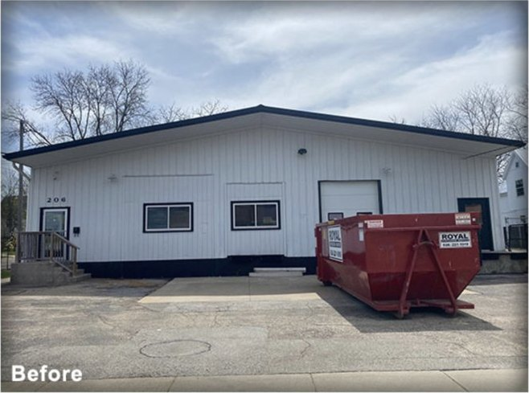
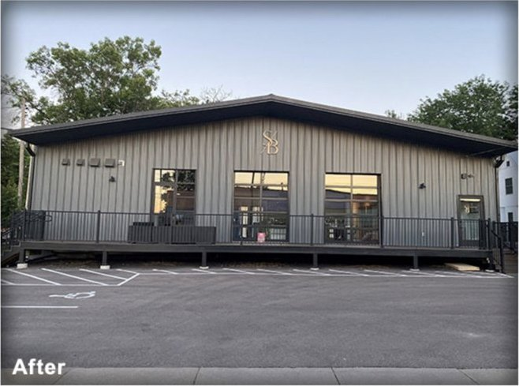
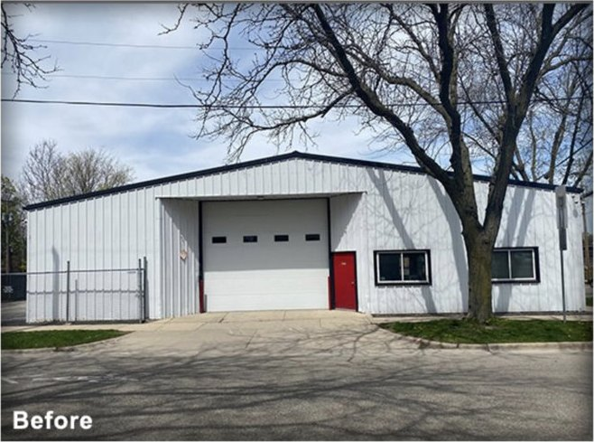

04 · Adaptive reuse, build-to-suit office · Completed
210 S Dickinson

- Address
- 210 S Dickinson Street, Madison
- Neighborhood
- Marquette
- Type
- Adaptive reuse, build-to-suit office
- Size
- 6,158 SF
- Built
- 1967
- Acquired
- 2019
- Delivered
- 2020
- Tenant
- Stephan & Brady
NMD project
A 1967 ice house and window-cleaning shop, rebuilt as creative office for Stephan & Brady.
- A 1967 masonry building, built as an ice house and for decades the shop of Madison Window Cleaning.
- Acquired in 2019.
- Gutted and rebuilt as a 6,158 SF single-tenant creative office, build-to-suit for Stephan & Brady, the marketing agency, on a long-term lease. Delivered 2020.
- Stephan & Brady remains the tenant.


